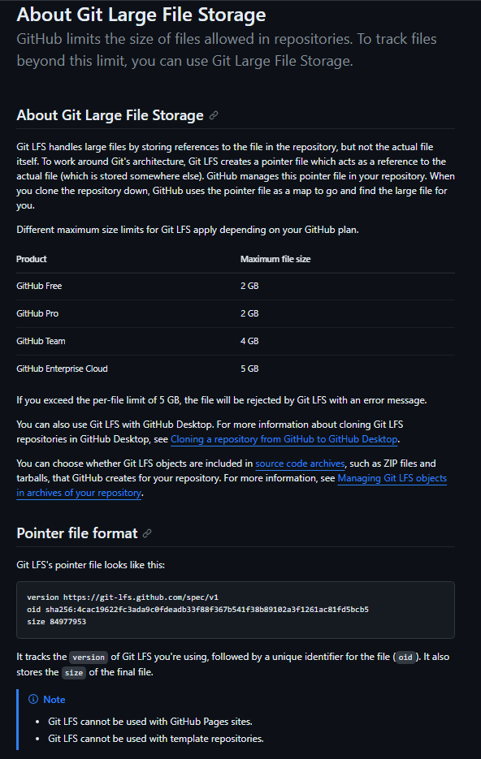
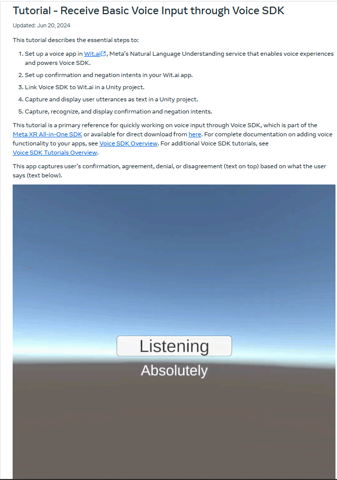

Debugging & Web Research
As part of my development journey, I frequently encountered bugs and roadblocks that required in-depth debugging and research. Here are some real examples that highlight how I tackled those situations:
1. Git LFS Issues with Unity Project
Problem: When pushing my Unity Paintball Game to GitHub, I ran into errors related to large file sizes.
Debug Process: I researched Git Large File Storage (LFS), installed it, and tracked large asset files using git lfs track "*.ext".
Solution: I cleaned my local repo and pushed again with LFS enabled, resolving the push failure and preventing future size issues.
git lfs install
git lfs track "*.unitypackage"
git add .gitattributes
git add <large files>
git commit -m "Track large assets with Git LFS"
git push origin main
Documentation Screenshot:
2. VR Voice Recognition Failure (Quest 1)
Problem: Meta Quest 1 did not support speech recognition using Android’s native API because the required voice service was missing.
Debug Process: Extensive forum and API documentation research revealed Quest 1 lacks Google Voice Services by default. I explored alternatives like Wit.ai via REST API.
Solution: I switched to a continuous listening setup using Wit.ai API to stream microphone input and parse results manually, restoring voice features.
using System.Net.Http;
using System.Threading.Tasks;
async Task<string> SendAudioToWitAi(byte[] audioData) {
var httpClient = new HttpClient();
httpClient.DefaultRequestHeaders.Add("Authorization", "Bearer YOUR_WIT_AI_TOKEN");
var content = new ByteArrayContent(audioData);
var response = await httpClient.PostAsync("https://api.wit.ai/speech?v=20200707", content);
return await response.Content.ReadAsStringAsync();
}
Documentation Screenshot:
Takeaway
Debugging and researching are essential skills in software development. These experiences enhanced my technical proficiency and taught me to break down complex problems and find reliable solutions independently.